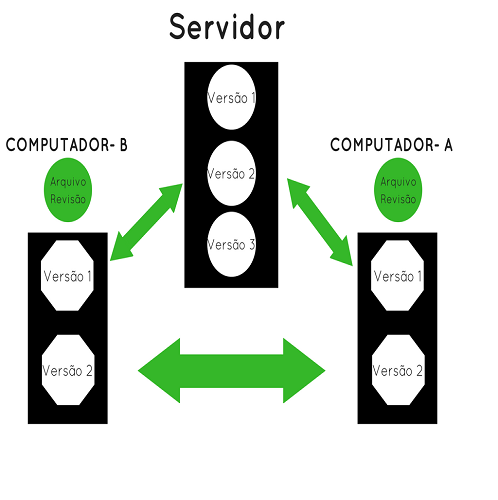
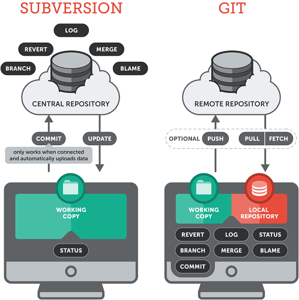

GIT
Git é um sistema de controle de versão de arquivos. Através deles podemos desenvolver projetos na qual diversas pessoas podem contribuir simultaneamente no mesmo, editando e criando novos arquivos e permitindo que os mesmos possam existir sem o risco de suas alterações serem sobrescritas. Se não houver um sistema de versão, imagine o caos entre duas pessoas abrindo o mesmo arquivo ao mesmo tempo. Uma das aplicações do git é justamente essa, permitir que um arquivo possa ser editado ao mesmo tempo por pessoas diferentes. Outro fator importante do git é a possibilidade de criar, a qualquer momento, vários snapshots/branch do seu projeto.
A maior diferença entre Git e qualquer outro VCS (Subversion e similares inclusos) está na forma que o Git trata os dados. Conceitualmente, a maior parte dos outros sistemas armazena informação como uma lista de mudanças por arquivo. Esses sistemas (CVS, Subversion, Perforce, Bazaar, etc.) tratam a informação que mantém como um conjunto de arquivos e as mudanças feitas a cada arquivo ao longo do tempo, conforme ilustrado na Figura

Git não pensa ou armazena sua informação dessa forma. Ao invés disso, o Git considera que os dados são como um conjunto de snapshots (captura de algo em um determinado instante, como em uma foto) de um mini-sistema de arquivos. Cada vez que você salva ou consolida (commit) o estado do seu projeto no Git, é como se ele tirasse uma foto de todos os seus arquivos naquele momento e armazenasse uma referência para essa captura. Para ser eficiente, se nenhum arquivo foi alterado, a informação não é armazenada novamente - apenas um link para o arquivo idêntico anterior que já foi armazenado. A figura 1-5 mostra melhor como o Git lida com seus dados.

Essa é uma distinção importante entre Git e quase todos os outros VCSs. Isso leva o Git a reconsiderar quase todos os aspectos de controle de versão que os outros sistemas copiaram da geração anterior. Também faz com que o Git se comporte mais como um mini-sistema de arquivos com algumas poderosas ferramentas construídas em cima dele, ao invés de simplesmente um VCS.
Tudo no Git tem seu checksum (valor para verificação de integridade) calculado antes que seja armazenado e então passa a ser referenciado pelo checksum. Isso significa que é impossível mudar o conteúdo de qualquer arquivo ou diretório sem que o Git tenha conhecimento. Essa funcionalidade é parte fundamental do Git e é integral à sua filosofia. Você não pode perder informação em trânsito ou ter arquivos corrompidos sem que o Git seja capaz de detectar.
Dentre as ações que você pode realizar no Git, quase todas apenas acrescentam dados à base do Git. É muito difícil fazer qualquer coisa no sistema que não seja reversível ou remover dados de qualquer forma. Assim como em qualquer VCS, você pode perder ou bagunçar mudanças que ainda não commitou; mas depois de fazer um commit de um snapshot no Git, é muito difícil que você o perca, especialmente se você frequentemente joga suas mudanças para outro repositório.

O diretório do Git é o local onde o Git armazena os metadados e o banco de objetos de seu projeto. Esta é a parte mais importante do Git, e é a parte copiada quando você clona um repositório de outro computador.
O diretório de trabalho é um único checkout de uma versão do projeto. Estes arquivos são obtidos a partir da base de dados comprimida no diretório do Git e colocados em disco para que você possa utilizar ou modificar.
A área de preparação é um simples arquivo, geralmente contido no seu diretório Git, que armazena informações sobre o que irá em seu próximo commit. É bastante conhecido como índice (index), mas está se tornando padrão chamá-lo de área de preparação.
O workflow básico do Git pode ser descrito assim:
1- Você modifica arquivos no seu diretório de trabalho.
2- Você seleciona os arquivos, adicionando snapshots deles para sua área de preparação.
3- Você faz um commit, que leva os arquivos como eles estão na sua área de preparação e os armazena permanentemente no seu diretório Git.
GIT HUB
Lançado em 2008 e é usado desde então para que desenvolvedores possam hospedar seus projetos. Para controle de versão é usado o Git. O GitHub costuma ser o preferido entre os seus utilizadores por oferecer também alguns recursos de redes sociais, já que é possível seguir projetos de outros desenvolvedores e ainda comentar sobre todos eles. O GitHub, além de tudo, possui um recurso bastante interessante, o Git, sendo possível compartilhar um bloco de código. Além disso, também é possível trocar ideias, comentar os demais projetos e ainda pegar o código de alguém para modificar. Ele está disponível gratuitamente, com limite de armazenamento de 300MB.
Para quem busca mais privacidade, o serviço oferece ainda planos pagos, com isso, os desenvolvedores podem ter um maior controle sobre o código fonte, bem como adicionar desenvolvedores fixos e esconder os códigos dos demais membros. O GitHub funciona basicamente na nuvem, por isso é possível armazenar todo o material. Assim sendo, o projeto pode ser acessado de qualquer local.
Um dos principais motivos pelo grande sucesso do GitHub é a possibilidade de compartilhar projetos. Desde o início do chamado open-source, o GitHub ganhou bastante destaque e é a rede mais usada atualmente;
Possuir uma conta e projetos no GitHub é um grande diferencial, já que ele está se tornando um grande apoio extracurricular. Com isso, clientes e também empresas poderão conhecer melhor o trabalho do usuário.
O GitHub, como vimos acima, possui total integração com o Git. Assim, o Git permite publicar e ainda gerencial de forma fácil todos os projetos. E o melhor, de forma rápida e segura.
O GitHub, além de várias vantagens, como as mencionadas acima, ainda funciona como uma rede social, o que possibilita que outro desenvolvedor siga o perfil do usuário, receba notificações e ainda é possível enviar mensagens diretas para um determinado perfil, o que facilita a troca de experiências, além claro, de fazer novas amizades.
Através do GitHub os usuários ainda podem aprender sempre mais. Tudo isso através da observação dos demais projetos, bem como a contribuição dos demais participantes.
Por esses e outros motivos, o GitHub é a melhor ferramenta para os desenvolvedores na atualidade. Se você ainda não conhece, vale a pena conferir as funcionalidades.

O que e SVN?
O Subervision também conhecido por (SVN) é um sistema de controle de versão OpenSource, uma ferramenta criada para sistema de ambientes multi-usuário, onde existe um documento editado por mais de uma pessoa. Facilitando aos usuários qual e a versão atual do documento, a quantidade de versões existentes e quem o alterou e quando.
Exemplificando
Sendo uma ferramenta poderosa para o seu uso colaborativo a partir de um único dispositivo armazenando geração de estatísticas diversas e logs. O SVN também permite retornar o código a um estado anterior facilitando a análise de implementações realizadas e a implementações distintas de períodos diferentes para a criação de uma única versão.

Vantagens de uso SVN
As vantagens desse sistema e o gerenciamento de mudanças em informações, pois para os programadores e usuários do SVN e fundamental para um grupo ou equipe atuando e qual parte distintas de um projeto sabendo quem alterou, quando alterou, porque foi alterado e o que foi alterado.
Comparação entre Git e Subversion (SVN)
Subversion (SVN)
O Subversion é um sistema de controle de versão centralizado utilizado tradicionalmente em projetos Java. O Git é um sistema de controle de versão distribuído que apresenta crescente adoção na comunidade de desenvolvimento de software em geral, especialmente após sua popularização através do serviço de hospedagem de códigos GitHub.
O Subversion (SVN), como representante do modelo centralizado de controle de versão, e o Git, como representante do modelo distribuído (ou DVCS – Distributed Version Control System). Assume-se que o leitor já possua familiaridade com algum sistema de versionamento de código e os conceitos de revisões, branches e tags, além do uso de ferramentas em linhas de comando. Ao final do artigo será apresentada uma breve introdução a ferramentas de integração do Git com outros sistemas, como IDEs Java, e ao processo de build, através da ferramenta Maven.
GIT
Git é um sistema de controle de versão de arquivos. Através deles podemos desenvolver projetos na qual diversas pessoas podem contribuir simultaneamente no mesmo, editando e criando novos arquivos e permitindo que os mesmos possam existir sem o risco de suas alterações serem sobrescritas. Se não houver um sistema de versão, imagine o caos entre duas pessoas abrindo o mesmo arquivo ao mesmo tempo. Uma das aplicações do git é justamente essa, permitir que um arquivo possa ser editado ao mesmo tempo por pessoas diferentes. Outro fator importante do git é a possibilidade de criar, a qualquer momento, vários snapshots/branch do seu projeto.
GIT HUB
O Github é um serviço web que oferece diversas funcionalidades extras aplicadas ao git. Você poderá usar gratuitamente o github para hospedar seus projetos pessoais. Além disso, quase todos os projetos/frameworks/bibliotecas sobre desenvolvimento open source estão no github, e você pode acompanhá-los através de novas versões, contribuir informando bugs ou até mesmo enviando código e correções.
